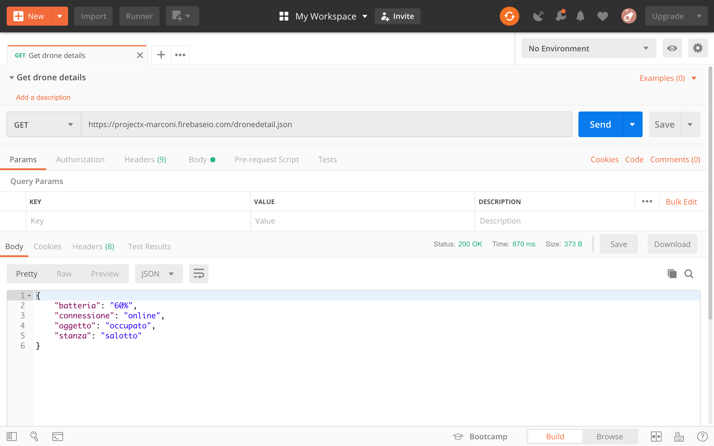

Postman
Provare una chiamata HTTP con il metodo GET è facile: basta scrivere l'indirizzo sulla barra di un browser. Provare gli altri metodi è più complesso, e può involvere la scrittura di un programma di test in qualche linguaggio, ad esempio JavaScript. Il problema di questo approccio è che fare il test di tante richieste diverse diventa complicato, e si perde più tempo a scrivere e modificare lo script che a fare i test.
Per risolvere questo problema, esistono delle suite di test specifiche per le chiamate HTTP. Una delle applicazioni più usate al momento è Postman.
La prima volta che lanciamo l'applicazione ci viene chiesto di registrarci, ma possiamo saltare questo passaggio premendo su "skip" in basso.
Una volta aperta l'applicazione, creiamo una nuova collezione dando un nome a piacere, ad esempio "Book HTML5"
Formato URL
L'URL (Universal Resource Locator) è un identificatore che ci permette di identificare in maniera univoca una risorsa in tutta la rete web.
Il suo formato è:
protocollo://host[:porta]</percorso>[?querystring][#fragment]
Ad esempio:
http:// www.recipepuppy.com /api/ ?i=onions
protocollo host (IP o dominio) percorso-risorsa query
GET
All'interno della collezione appena creata, aggiungiamo una "Request" che possiamo chiamare con il nome del servizio che stiamo interrogando.

Nella parte in basso ci sono i dati relativi alla riposta del server, in cui possiamo leggere il JSON restituito dal database.
Qui una lista di URL che avete trovato nel compito assegnato:
- https://ipapi.co/8.8.8.8/json
- https://adsbexchange.com/api/aircraft/json/
- http://www3.septa.org/hackathon/NextToArrive/?req1=Airport%20Terminal%20B&req2=Ardmore&req3=10
- http://ergast.com/api/f1/drivers.json?callback=myParser
- http://ergast.com/api/f1/drivers.json
- https://www.balldontlie.io/api/v1/teams/26
- https://pokeapi.co/pokemon/ditto
- https://chroniclingamerica.loc.gov/search/titles/results/?terms=michigan&format=json&page=5
- https://openwhyd.org/adrien?format=json
- https://www.themealdb.com/api/json/v1/1/search.php?s=Bolognese
- https://rickandmortyapi.com/api/character/4
- http://ip-api.com/xml/80.36.224.6
- https://foaas.com/cool/Capobianco
- http://www.recipepuppy.com/api/?i=onions,garlic&q=omelet&c=eggs
- https://rickandmortyapi.com/api/character/?name=Collector&status=alive
- https://world.openfoodfacts.org/api/v0/product/737628064502.json?as=nuggets
- http://NflArrest.com/api/v1/crime
- http://ergast.com/api/f1/drivers.json?callback=myParser
Formato JSON
Lo standard del formato di stringhe per lo scambio informazioni sul web oggi è sicuramente JSON (JavaScript Object Notation).
Studiare da pag.45 a pag.49 (creare oggetti JSON escluso), oppure cercare JSON sul manuale per l'esame e studiate i relativi paragrafi.